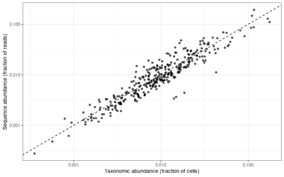
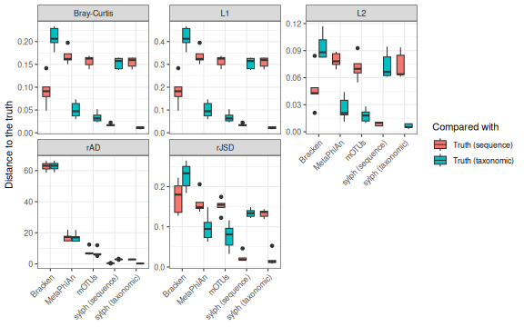
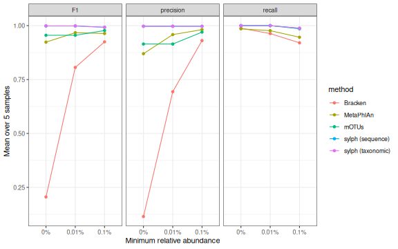
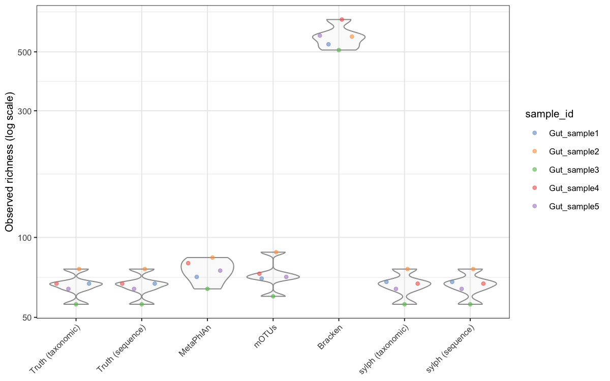
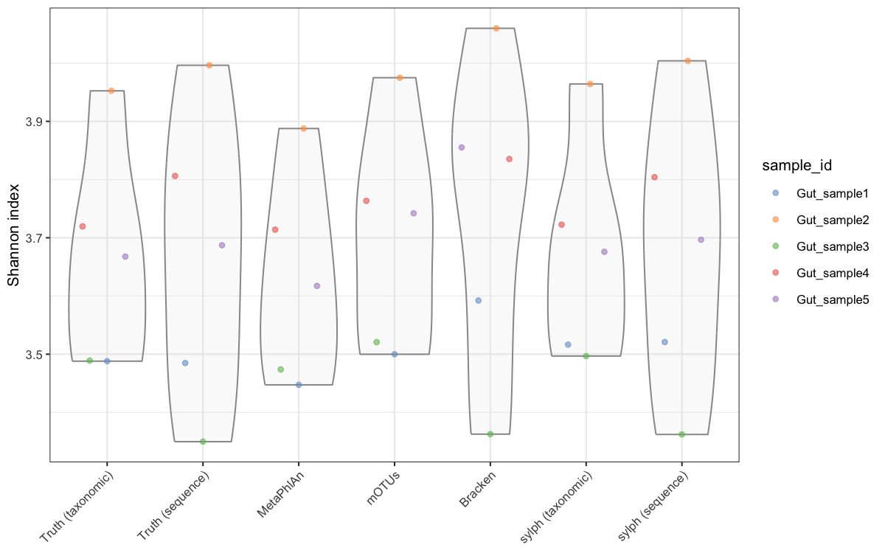
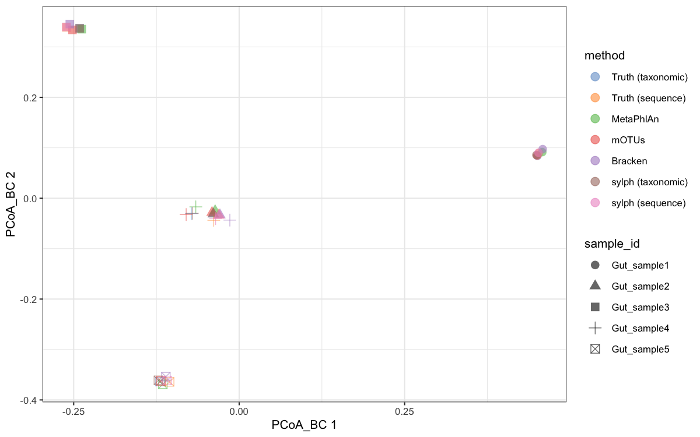

All in One View
Content from Recap from Day 1
Last updated on 2026-11-03 | Edit this page
Overview
Questions
- What did we produce on Day 1, and where does Day 2 pick up?
- Which
nf-core/taxprofilerandnf-core/funcprofileroutputs will we analyse today?
Objectives
- Review the main stages from FASTQ files to nf-core pipeline outputs
- Identify the files from Day 1 that are the inputs for today’s analysis
From reads to abundance tables
On Day 1 we went from raw shotgun metagenomic reads to standardised abundance tables:
| Stage | What happened | Tool | Output |
|---|---|---|---|
| 1. Data | Downloaded paired-end FASTQ files and sample metadata | ENA browser, wget, MD5 check |
Raw reads, metadata.tsv
|
| 2. Pipeline setup | Built sample and database sheets and a reproducible launch command | Nextflow, nf-core |
samplesheet.csv, databases.csv,
params.json
|
| 3. Pre-processing | Read QC, adapter trimming, host-read removal | nf-core/taxprofiler (fastp, Bowtie2, …) | MultiQC report |
| 4. Taxonomic profiling | The same reads were classified by four profilers | MetaPhlAn, mOTUs, Kraken2/Bracken, sylph | One profile per tool and sample |
| 5. Standardisation | Profiles were converted to a common format and merged | Taxpasta | One merged table per profiler |
| 6. Import into R | Tables and metadata were loaded into a single object |
mia, TreeSummarizedExperiment
|
TreeSummarizedExperiment object |
The dataset
We are using samples from the benchmarking study by Sun et al. (2021), Challenges in benchmarking metagenomic profilers. These are mock and simulated communities, so we know the true composition of each sample. On Day 1, we used the a subset of the original data as input for the pipelines, which does not reflect the complete taxonomic and functional profiles of the samples. Therefore, we also provide you with the outputs from the full metagen
What we do today
- Concepts: why the four profilers give different answers for the same reads.
- Practice: compare the profilers against the ground truth, and see how the choice of profiler changes alpha and beta diversity.
- Differential abundance: test which taxa differ between groups of samples.
Quick check
On Day 1, every sample was run through four profilers. Before we look at the results, do you expect them to agree? On what: the list of species present, their abundances, or both?
- nf-core/taxprofiler ran four profilers on the same reads, and Taxpasta standardised their outputs into comparable tables.
- Our samples have a known composition (the ground truth), so we can judge how accurate each profiler is.
- Today’s analysis starts from the merged Taxpasta tables and the sample metadata.
Content from Comparing taxonomic profilers: concepts
Last updated on 2026-11-03 | Edit this page
Overview
Questions
- Why do different taxonomic profilers give different answers for the same reads?
- What does “abundance” actually mean in each profiler’s output?
- How to choose the right profiler and database for the research question?
Objectives
- Describe the two main reference taxonomies used in metagenomics: NCBI RefSeq and GTDB
- Distinguish between sequence abundance, relative taxonomic abundance, and absolute abundance
- Explain Average Nucleotide Identity (ANI) and containment ANI
- Describe the database and approach of MetaPhlAn, mOTUs, Kraken2/Bracken and sylph
- Weigh the pros and cons of each approach for a given scenario
- Choose an appropriate output for a research question, and use the other outputs as complementary information
Introduction
A taxonomic profiler answers two questions: who is there? and how much of each? Each profiler’s answer depends on three choices:
- the reference database it compares reads against;
- the method it uses to assign reads, or parts of reads, to taxa;
- the type of abundance it reports.
Two profilers that differ in any of these can give different results for the same sample, and both can be “correct”. Before we compare the outputs in R (next episode), we need to understand these differences.
Reference databases: the two pillars
Most metagenomic databases are built on one of two taxonomies:
| NCBI Taxonomy / RefSeq | GTDB | |
|---|---|---|
| What it is | NCBI’s curated collection of reference sequences, labelled with the NCBI Taxonomy | The Genome Taxonomy Database: a taxonomy of bacteria and archaea built from genome phylogeny |
| How taxa are defined | Historical, literature-based classification. Ranks are not standardised across lineages | Phylogeny of conserved marker proteins, with ranks normalised by relative evolutionary divergence. Species are clusters of genomes at about 95% ANI |
| Coverage | Bacteria, archaea, viruses, fungi, other eukaryotes, plasmids, the human genome | Bacteria and archaea only, including many uncultured genomes (MAGs) |
| Names | Familiar, e.g. Shigella flexneri, phylum Firmicutes / Bacillota | Can differ from NCBI. For example, Shigella species fall
within Escherichia coli, and genera are split with suffixes
such as Clostridium_A
|
Names are not interchangeable
A profiler using a GTDB database and one using an NCBI database can detect the same organism under different names. Before comparing the profilers’ outputs, we have to map them to a common taxonomy. Otherwise a correct detection looks like a false positive plus a false negative.
What does “abundance” mean?
Sun et al. (2021) showed that much of the disagreement between profilers comes from reporting different kinds of abundance:
- Sequence abundance: the fraction of sequenced reads (or bases) that come from a taxon.
- Taxonomic abundance: the fraction of cells (genomes) that belong to a taxon.
- Absolute abundance: the actual amount of a taxon, e.g. cells per gram of stool. None of the profilers we use can estimate this from sequencing alone. It requires extra measurements such as spike-ins, qPCR or flow cytometry.
Sequence and taxonomic abundance are related through the genome size. A taxon with a genome twice as large contributes roughly twice as many reads per cell:
\[\text{sequence abundance}_i \propto \text{taxonomic abundance}_i \times \text{genome size}_i\]
Challenge 1: Same cells, different numbers
A community has equal numbers of cells of species A (genome size 2 Mb) and species B (genome size 6 Mb). Assuming every read is classified, what is each species’ taxonomic abundance and sequence abundance?
Taxonomic abundance: A = 50%, B = 50%.
Sequence abundance: B contributes three times as many bases per cell as A, so A = 2 / (2 + 6) = 25% and B = 75%.
The same community gives very different numbers depending on what is reported.
ANI and containment ANI
Average nucleotide identity (ANI) measures how similar two genomes are. Genomes with roughly ≥ 95% ANI are usually considered the same species, which is the species definition GTDB uses.
Containment ANI estimates the ANI between a reference genome and the reads in a metagenome. It is based on the fraction of the reference genome’s k-mers found (contained) in the sample. If the reference is present, nearly all its k-mers should be found. A lower containment ANI suggests a related strain or species rather than the reference itself. At low sequencing depth, many k-mers are missed simply by chance. sylph corrects for this and reports an adjusted ANI.
The four profilers
| MetaPhlAn | mOTUs | Kraken2 + Bracken | sylph | |
|---|---|---|---|---|
| Approach | Maps reads to clade-specific marker genes | Maps reads to universal single-copy marker genes (10 genes) | Exact k-mer matching, each read assigned to the lowest common ancestor (LCA) of matching taxa. Bracken then re-estimates abundance at a chosen rank | k-mer sketching. Estimates containment ANI and coverage for each reference genome |
| Database | ChocoPhlAn marker database, organised into species-level genome bins (SGBs) | mOTUs database: marker-gene clusters from reference genomes and metagenome-assembled genomes | User-chosen, often built from RefSeq (e.g. the Kraken2 Standard database). Bracken files are built per database and read length | Pre-built genome databases, e.g. GTDB |
| Reports | Taxonomic abundance (relative) | Relative abundance from single-copy markers (≈ taxonomic). Read counts optional | Reads per taxon (sequence abundance) | Both sequence and taxonomic abundance, plus ANI and coverage |
| Unknown taxa | Unknown SGBs (uSGBs) from MAGs | Reports an unassigned (-1) fraction for
species not in the database |
Reads stay unclassified, or are assigned to a higher rank | Genomes below the ANI threshold are not reported |
Pros and cons
- MetaPhlAn: fast, with few false positives thanks to the unique marker genes. Covers bacteria, archaea and some eukaryotes and viruses. Can miss taxa that have few markers or are present at low coverage. Gives no read counts by default.
- mOTUs: estimates the proportion of unknown species, and works well for poorly characterised environments thanks to its MAG-derived markers. Only covers prokaryotes.
- Kraken2/Bracken: classifies every read, can include viruses and eukaryotes, and its read counts suit count-based statistics. Prone to false positives, especially with small or incomplete databases, so it often needs abundance or read-count filtering. Its abundance is sequence abundance.
- sylph: very fast, accurate at species level, reports both abundance types, and its ANI output helps tell strains apart. Only as good as its genome database (GTDB covers bacteria and archaea only), and uses GTDB names.
Challenge 2: Pick a profiler
Which profiler (or output) would you choose for each scenario, and why?
- You want to know what fraction of the community belongs to species that are missing from reference databases.
- You plan to use a count-based differential abundance method that needs read counts.
- Your samples may contain DNA viruses and fungi as well as bacteria.
- You want to compare cell proportions with flow-cytometry estimates.
-
mOTUs. Its
-1fraction estimates the unassigned species. sylph with a MAG-rich database is also an option. - Kraken2/Bracken read counts, or mOTUs run with read counts enabled.
- Kraken2 with a database that includes viral and fungal genomes. MetaPhlAn also covers some eukaryotes and viruses.
-
Taxonomic abundance: sylph’s
Taxonomic_abundance, MetaPhlAn or mOTUs. Not Bracken’s sequence abundance.
These are discussion points rather than single right answers.
Using outputs as complementary information
There is rarely one “best” profiler. A practical strategy:
- Choose a primary output that matches your question: taxonomic abundance for questions about cell proportions, read counts for count-based statistical models.
- Use the other profilers as a sanity check. Taxa detected by several tools, built on different databases and methods, are more trustworthy. Taxa detected by only one tool, at low abundance, deserve scrutiny.
- Report what you used: tool, version, database and abundance type. Results from different profilers, or different abundance types, should not be mixed in one analysis.
- Profilers differ in their database (NCBI/RefSeq vs GTDB), method (marker genes, k-mers, sketching) and type of abundance, and all three affect the results.
- Sequence abundance (fraction of reads) and taxonomic abundance (fraction of cells) differ systematically because genome sizes differ.
- Containment ANI estimates how much of a reference genome in “contained” in the sample.
- Choose the profiler and abundance type that match your research question, and use agreement between tools as supporting evidence.
Content from Community analysis and comparing taxonomic profilers: practice
Last updated on 2026-11-03 | Edit this page
Overview
Questions
- How close is each profiler to the known composition of the samples?
- Does the choice of profiler change alpha and beta diversity results?
Objectives
- Combine the profiler outputs and the ground truth in one
TreeSummarizedExperiment - Explore the effect of abundance type on profiling output
- Calculate the distance between estimated profiles and the ground truth (Bray–Curtis, rJSD, L1, L2, rAD)
- Perform a precision–recall analysis of species detection
- Compare alpha diversity estimates among profilers
- Compare beta diversity among profilers with PCoA and PERMANOVA
Load packages and data
R
library(mia)
library(scater)
library(vegan)
library(readr)
library(dplyr)
library(tidyr)
library(ggplot2)
Load mia before
dplyr
mia has its own left_join(),
full_join() and inner_join() functions for
TreeSummarizedExperiment objects. If mia is
loaded after dplyr, they mask the
dplyr versions, and joining two data frames fails with
“Input includes an object that is not ‘SummarizedExperiment’”.
Loading mia first, as above, avoids this. You can always
call a specific version with dplyr::left_join().
The data/ folder holds one table per profiler, two
ground-truth tables and the sample metadata. All the profiler tables
have the same layout: a taxonomy_id column, a
name column, and one column per sample.
| File | Profiler and database | Taxonomy | Values |
|---|---|---|---|
metaphlan.tsv |
MetaPhlAn 4.1.1, mpa_vJun23_CHOCOPhlAnSGB_202403
|
NCBI | taxonomic abundance (%) |
motus.tsv |
mOTUs 3.1.0 | NCBI | marker-gene read counts |
bracken.tsv |
Kraken2 2.1.5 + Bracken 3.0.1,
k2_standard_08_GB_20260626
|
NCBI | reads per species |
sylph_taxonomic.tsv,
sylph_sequence.tsv
|
sylph 0.7.0, GTDB R220 (c200) |
GTDB R220 | taxonomic and sequence abundance (%) |
truth_taxonomic.tsv,
truth_sequence.tsv
|
ground truth from Sun et al. | NCBI, with GTDB R220 names | fractions |
ncbi_to_gtdb_r220.tsv |
mapping of the 95 truth species between NCBI and GTDB R220 | both | |
metadata.tsv |
sample information |
taxonomy_id is an NCBI taxonomy ID for the NCBI-based
tools. For sylph it is the GTDB species name, and for the few taxa
without an NCBI species ID (e.g. new MetaPhlAn SGBs) it is the tool’s
own identifier.
These tables were made from the per-sample output files of nf-core/taxprofiler. To make the same tables from your own pipeline results, see From pipeline output to analysis tables.
R
read_profile <- function(file) {
read_tsv(file, col_types = cols(taxonomy_id = col_character(), .default = col_guess()))
}
metadata <- read_tsv("data/metadata.tsv")
truth_tax <- read_profile("data/truth_taxonomic.tsv")
truth_seq <- read_profile("data/truth_sequence.tsv")
metaphlan <- read_profile("data/metaphlan.tsv")
motus <- read_profile("data/motus.tsv")
bracken <- read_profile("data/bracken.tsv")
sylph_tax <- read_profile("data/sylph_taxonomic.tsv")
sylph_seq <- read_profile("data/sylph_sequence.tsv")
gtdb_map <- read_tsv("data/ncbi_to_gtdb_r220.tsv", col_types = cols(.default = "c"))
samples <- metadata$sample_id
metadata
OUTPUT
# A tibble: 5 × 6
sample_id community n_species_truth read_pairs_raw read_pairs_qc
<chr> <chr> <dbl> <dbl> <dbl>
1 Gut_sample1 simulated human gut 67 9992084 9991772
2 Gut_sample2 simulated human gut 76 9996732 9996176
3 Gut_sample3 simulated human gut 56 9995889 9995356
4 Gut_sample4 simulated human gut 67 9991243 9990455
5 Gut_sample5 simulated human gut 64 9995965 9995479
# ℹ 1 more variable: kraken2_unclassified_pct <dbl>A first look at the outputs
Each profiler reports in its own units. Let’s add up each table’s columns:
R
outputs <- list(truth = truth_tax, MetaPhlAn = metaphlan, mOTUs = motus,
Bracken = bracken, sylph = sylph_tax)
sapply(outputs, function(x) colSums(x[samples]))
OUTPUT
truth MetaPhlAn mOTUs Bracken sylph
Gut_sample1 1.0000000 99.99999 6577 7633203 99.9999
Gut_sample2 1.0000000 99.99999 7478 7718950 99.9995
Gut_sample3 0.9999999 99.99999 6894 7879095 99.9999
Gut_sample4 1.0000000 99.99999 7514 7391640 100.0001
Gut_sample5 1.0000000 99.99999 6995 7670182 99.9999The truth sums to 1 (fractions), MetaPhlAn and sylph to 100 (percent), and Bracken and mOTUs report counts. Bracken counts reads, while mOTUs counts reads mapped to its 10 marker genes, which is why its totals are so much smaller. Before comparing anything, we will convert all of them to relative abundances.
How many species does each tool report in each sample?
R
sapply(outputs, function(x) colSums(x[samples] > 0))
OUTPUT
truth MetaPhlAn mOTUs Bracken sylph
Gut_sample1 67 71 71 534 68
Gut_sample2 76 84 89 571 76
Gut_sample3 56 64 61 508 56
Gut_sample4 67 80 74 662 67
Gut_sample5 64 75 72 576 64The samples contain 56–76 species. MetaPhlAn and mOTUs report a handful more, sylph almost exactly the right number, and Bracken more than 500 per sample.
Challenge 1: Where do Bracken’s extra species come from?
- Look at the
kraken2_unclassified_pctcolumn ofmetadata. What fraction of reads did Kraken2 leave unclassified? - Sort
brackenby its abundance inGut_sample1and look at rows 60–80 and the last few rows. How abundant are the species there?
R
metadata$kraken2_unclassified_pct
OUTPUT
[1] 23.47 22.65 21.06 25.88 23.12R
bracken_s1 <- bracken |>
filter(Gut_sample1 > 0) |>
arrange(desc(Gut_sample1)) |>
select(name, Gut_sample1)
nrow(bracken_s1)
OUTPUT
[1] 534R
slice(bracken_s1, 60:75)
OUTPUT
# A tibble: 16 × 2
name Gut_sample1
<chr> <dbl>
1 Parabacteroides distasonis 11446
2 Parvimonas micra 11091
3 Streptococcus parasanguinis 10858
4 Paraprevotella clara 9636
5 Bifidobacterium sp. KRGSERBCFTRI 9305
6 [Clostridium] scindens 8759
7 Streptococcus cristatus 8614
8 Campylobacter hominis 8142
9 Fusobacterium periodonticum 7461
10 Enterocloster bolteae 6717
11 Phascolarctobacterium sp. Marseille-Q4147 4433
12 Eubacterium callanderi 3005
13 Dorea formicigenerans 2640
14 Haemophilus pittmaniae 2235
15 Streptococcus sp. FDAARGOS_521 2041
16 Clostridium taeniosporum 1604R
tail(bracken_s1)
OUTPUT
# A tibble: 6 × 2
name Gut_sample1
<chr> <dbl>
1 Streptococcus danieliae 10
2 Legionella oakridgensis 10
3 Raoultibacter timonensis 10
4 Blautia hydrogenotrophica 10
5 Hominifimenecus sp. rT4P-3 10
6 Sanguibacter sp. TS_SC_8 10- About 21–26% of the reads were not classified. The simulation only used genomes present in the profilers’ databases, but the Kraken2 database here is the Standard-8 database, which is capped at 8 GB, so many k-mers of those genomes are missing.
- Beyond the true species, Bracken reports hundreds of species with tens to a few thousand reads each, out of about 7.7 million classified reads. These are false positives: reads that share k-mers with related genomes in the database. They are the reason Kraken2/Bracken output is usually filtered by abundance or read count.
Same species, different names
The same organism can have a different name in each table. Here is NCBI taxonomy ID 33038:
R
bind_rows(truth = truth_tax, MetaPhlAn = metaphlan, mOTUs = motus, Bracken = bracken,
.id = "source") |>
filter(taxonomy_id == "33038") |>
select(source, taxonomy_id, name)
OUTPUT
# A tibble: 4 × 3
source taxonomy_id name
<chr> <chr> <chr>
1 truth 33038 [Ruminococcus] gnavus
2 MetaPhlAn 33038 Ruminococcus gnavus
3 mOTUs 33038 [Ruminococcus] gnavus
4 Bracken 33038 Mediterraneibacter gnavusR
filter(sylph_tax, grepl("gnavus", name)) |> select(name, gtdb_lineage)
OUTPUT
# A tibble: 1 × 2
name gtdb_lineage
<chr> <chr>
1 Ruminococcus_B gnavus d__Bacteria;p__Bacillota_A;c__Clostridia;o__Lachnospira…The NCBI-based tools use the names of their own NCBI taxonomy versions: [Ruminococcus] gnavus (2021, mOTUs), Ruminococcus gnavus (MetaPhlAn) and Mediterraneibacter gnavus (2026, Kraken2). The taxonomy ID stays the same, so we compare the NCBI-based tools by taxonomy ID, not by name. sylph uses GTDB R220, where the species is Ruminococcus_B gnavus in the phylum Bacillota_A, and there is no taxonomy ID to join on.
Mapping sylph’s GTDB names to NCBI
To put sylph in the same table as the others, we translate its GTDB
species to NCBI taxonomy IDs with
ncbi_to_gtdb_r220.tsv:
R
head(gtdb_map)
OUTPUT
# A tibble: 6 × 6
taxonomy_id ncbi_name sun2021_name gtdb_r220_species gtdb_r220_species_by…¹
<chr> <chr> <chr> <chr> <chr>
1 187327 Acidaminoco… Acidaminoco… Acidaminococcus … Acidaminococcus intes…
2 446660 Adlercreutz… Adlercreutz… Adlercreutzia eq… Adlercreutzia equolif…
3 732 Aggregatiba… Aggregatiba… Aggregatibacter … Aggregatibacter aphro…
4 239935 Akkermansia… Akkermansia… Akkermansia muci… Akkermansia muciniphi…
5 214856 Alistipes f… Alistipes_f… Alistipes finego… Alistipes finegoldii
6 328814 Alistipes s… Alistipes_s… Alistipes shahii Alistipes shahii
# ℹ abbreviated name: ¹gtdb_r220_species_by_name
# ℹ 1 more variable: evidence <chr>Species without an NCBI equivalent keep their GTDB name as their ID:
R
add_ncbi_id <- function(sylph_table, gtdb_column = "gtdb_r220_species") {
lookup <- select(gtdb_map, ncbi_id = taxonomy_id, gtdb = all_of(gtdb_column))
sylph_table |>
left_join(lookup, by = c("name" = "gtdb")) |>
mutate(taxonomy_id = coalesce(ncbi_id, taxonomy_id)) |>
select(-ncbi_id, -gtdb_lineage)
}
sylph_tax_ncbi <- add_ncbi_id(sylph_tax)
sylph_seq_ncbi <- add_ncbi_id(sylph_seq)
# sylph species that did not map to an NCBI taxonomy ID
filter(sylph_tax_ncbi, !grepl("^[0-9]+$", taxonomy_id)) |> select(taxonomy_id, name)
OUTPUT
# A tibble: 1 × 2
taxonomy_id name
<chr> <chr>
1 Bifidobacterium sp959020155 Bifidobacterium sp959020155All but one of sylph’s species map to a truth species. The exception, Bifidobacterium sp959020155, is a false positive.
Challenge 2: Mapping by name
The mapping table has two GTDB columns.
gtdb_r220_species_by_name is what you get by looking up the
NCBI species name in GTDB, which places it with its type strain.
gtdb_r220_species was checked against the genomes that were
actually simulated.
- For how many species do the two columns differ?
- Map sylph’s output with
gtdb_column = "gtdb_r220_species_by_name". How many sylph species now fail to map? - What would that do to sylph’s apparent precision and recall?
R
filter(gtdb_map, gtdb_r220_species != gtdb_r220_species_by_name) |>
select(ncbi_name, gtdb_r220_species_by_name, gtdb_r220_species)
OUTPUT
# A tibble: 12 × 3
ncbi_name gtdb_r220_species_by_name gtdb_r220_species
<chr> <chr> <chr>
1 Clostridium botulinum Clostridium_F botulinum Clostridium cagae
2 Desulfovibrio piger Desulfovibrio piger Desulfovibrio pige…
3 Faecalibacterium prausnitzii Faecalibacterium prausnitzii Faecalibacterium d…
4 Finegoldia magna Finegoldia magna Finegoldia magna_H
5 Fusobacterium nucleatum Fusobacterium nucleatum Fusobacterium anim…
6 Fusobacterium periodonticum Fusobacterium periodonticum Fusobacterium peri…
7 Gardnerella vaginalis Bifidobacterium vaginale Bifidobacterium sw…
8 Isoptericola variabilis Pauljensenia variabilis Isoptericola varia…
9 Oxalobacter formigenes Oxalobacter formigenes Oxalobacter parafo…
10 Peptoniphilus harei Peptoniphilus_A harei Peptoniphilus_A ha…
11 Rothia mucilaginosa Rothia mucilaginosa Rothia sp001808955
12 Streptococcus cristatus Streptococcus cristatus Streptococcus cris…R
add_ncbi_id(sylph_tax, gtdb_column = "gtdb_r220_species_by_name") |>
filter(!grepl("^[0-9]+$", taxonomy_id)) |>
nrow()
OUTPUT
[1] 13- 12 species. GTDB splits these NCBI species into several species, and the genome that was simulated is not in the same GTDB species as the type strain. For example, the Fusobacterium nucleatum genome belongs to Fusobacterium animalis in GTDB.
- 13 species: the 12 split species plus the real false positive.
- Each of the 12 would count as a false positive (the GTDB name sylph reported) and a false negative (the truth species it “missed”), even though sylph found the right genome. A name-based mapping across taxonomies can make a correct profiler look wrong.
Combine everything in one TreeSummarizedExperiment
We now put the truth and all profiler outputs into one object. Each
column is one sample × method combination, and each row is one
taxon. We drop mOTUs’ -1 row (reads from species missing
from its database, about 0.1–0.3% here), and convert every column to
relative abundance so that it sums to 1.
R
methods <- c("Truth (taxonomic)", "Truth (sequence)", "MetaPhlAn", "mOTUs", "Bracken",
"sylph (taxonomic)", "sylph (sequence)")
profiles <- bind_rows(
"Truth (taxonomic)" = truth_tax,
"Truth (sequence)" = truth_seq,
"MetaPhlAn" = metaphlan,
"mOTUs" = filter(motus, taxonomy_id != "-1"),
"Bracken" = bracken,
"sylph (taxonomic)" = sylph_tax_ncbi,
"sylph (sequence)" = sylph_seq_ncbi,
.id = "method") |>
select(method, taxonomy_id, name, all_of(samples)) |>
pivot_longer(all_of(samples), names_to = "sample_id", values_to = "value") |>
group_by(method, sample_id) |>
mutate(relabundance = value / sum(value)) |>
ungroup() |>
mutate(column = paste(sample_id, method, sep = " | "))
profiles
OUTPUT
# A tibble: 8,435 × 7
method taxonomy_id name sample_id value relabundance column
<chr> <chr> <chr> <chr> <dbl> <dbl> <chr>
1 Truth (taxonomic) 29391 Gemella … Gut_samp… 0.176 0.176 Gut_s…
2 Truth (taxonomic) 29391 Gemella … Gut_samp… 0.00874 0.00874 Gut_s…
3 Truth (taxonomic) 29391 Gemella … Gut_samp… 0.0540 0.0540 Gut_s…
4 Truth (taxonomic) 29391 Gemella … Gut_samp… 0.00774 0.00774 Gut_s…
5 Truth (taxonomic) 29391 Gemella … Gut_samp… 0 0 Gut_s…
6 Truth (taxonomic) 1680 Bifidoba… Gut_samp… 0.0194 0.0194 Gut_s…
7 Truth (taxonomic) 1680 Bifidoba… Gut_samp… 0.0278 0.0278 Gut_s…
8 Truth (taxonomic) 1680 Bifidoba… Gut_samp… 0.0130 0.0130 Gut_s…
9 Truth (taxonomic) 1680 Bifidoba… Gut_samp… 0.00250 0.00250 Gut_s…
10 Truth (taxonomic) 1680 Bifidoba… Gut_samp… 0.167 0.167 Gut_s…
# ℹ 8,425 more rowsNext, build the three parts of the object: the abundance matrix
(assay), the column information (colData) and
the row information (rowData):
R
# abundance matrix: taxa x (sample | method)
wide <- profiles |>
select(taxonomy_id, column, relabundance) |>
pivot_wider(names_from = column, values_from = relabundance, values_fill = 0)
abundance <- as.matrix(select(wide, -taxonomy_id))
rownames(abundance) <- wide$taxonomy_id
# one row per column of the matrix
col_info <- profiles |>
distinct(column, sample_id, method) |>
mutate(method = factor(method, levels = methods),
profiler = sub(" \\(.*", "", method),
abundance_type = ifelse(grepl("sequence", method) | method == "Bracken",
"sequence", "taxonomic"),
taxonomy = ifelse(grepl("sylph", method), "GTDB R220", "NCBI")) |>
as.data.frame()
rownames(col_info) <- col_info$column
# one row per taxon: use the truth name where there is one
row_info <- profiles |>
arrange(!grepl("Truth", method)) |>
distinct(taxonomy_id, .keep_all = TRUE) |>
transmute(taxonomy_id, name, in_truth = taxonomy_id %in% truth_tax$taxonomy_id) |>
as.data.frame()
rownames(row_info) <- row_info$taxonomy_id
R
tse <- TreeSummarizedExperiment(
assays = list(relabundance = abundance),
colData = DataFrame(col_info[colnames(abundance), ]),
rowData = DataFrame(row_info[rownames(abundance), ]))
tse
OUTPUT
class: TreeSummarizedExperiment
dim: 1101 35
metadata(0):
assays(1): relabundance
rownames(1101): 29391 1680 ... 45497 Bifidobacterium sp959020155
rowData names(3): taxonomy_id name in_truth
colnames(35): Gut_sample1 | Truth (taxonomic) Gut_sample2 | Truth
(taxonomic) ... Gut_sample4 | sylph (sequence) Gut_sample5 | sylph
(sequence)
colData names(6): column sample_id ... abundance_type taxonomy
reducedDimNames(0):
mainExpName: NULL
altExpNames(0):
rowLinks: NULL
rowTree: NULL
colLinks: NULL
colTree: NULLR
table(tse$method, tse$abundance_type)
OUTPUT
sequence taxonomic
Truth (taxonomic) 0 5
Truth (sequence) 5 0
MetaPhlAn 0 5
mOTUs 0 5
Bracken 5 0
sylph (taxonomic) 0 5
sylph (sequence) 5 0Sequence abundance versus taxonomic abundance
The ground truth gives both abundance types for the same community. If all genomes were the same size, the two would be identical:
R
truth_long <- truth_tax |>
pivot_longer(all_of(samples), names_to = "sample_id", values_to = "taxonomic") |>
inner_join(pivot_longer(truth_seq, all_of(samples), names_to = "sample_id",
values_to = "sequence"),
by = c("taxonomy_id", "name", "gtdb_r220_species", "sample_id")) |>
filter(taxonomic > 0)
ggplot(truth_long, aes(taxonomic, sequence)) +
geom_abline(linetype = "dashed") +
geom_point(alpha = 0.6) +
scale_x_log10() + scale_y_log10() +
labs(x = "Taxonomic abundance (fraction of cells)",
y = "Sequence abundance (fraction of reads)") +
theme_bw()

Species above the dashed line have larger genomes than average, so they contribute more reads per cell. Species below it have smaller genomes. Within a sample, the ratio of the two abundances is proportional to genome size:
R
truth_long |>
mutate(ratio = sequence / taxonomic) |>
group_by(name) |>
summarise(relative_genome_size = median(ratio)) |>
arrange(relative_genome_size) |>
slice(c(1:3, (n() - 2):n()))
OUTPUT
# A tibble: 6 × 2
name relative_genome_size
<chr> <dbl>
1 Mycoplasma hominis 0.242
2 Lancefieldella parvula 0.567
3 Parvimonas micra 0.598
4 Bacteroides intestinalis 2.19
5 Blautia producta 2.20
6 Hungatella hathewayi 2.74 Mycoplasma hominis has a very small genome (about 0.7 Mb), so its share of the reads is about a quarter of its share of the cells. Hungatella hathewayi (about 7 Mb) is the opposite. A profiler that reports one type cannot be fairly judged against the other.
How close is each profiler to the truth?
We measure the distance between each estimated profile and the truth with five measures, as in Sun et al. (2021):
| Measure | What it does |
|---|---|
| Bray–Curtis | Sum of absolute differences, scaled to 0–1. Dominated by abundant taxa |
| L1 | Sum of absolute differences (Manhattan distance). Same ranking as Bray–Curtis for relative abundances |
| L2 | Euclidean distance. Squares the differences, so a few large errors dominate |
| rJSD | Square root of the Jensen–Shannon divergence, a symmetric measure from information theory |
| rAD | Robust Aitchison distance: Euclidean distance after a centred log-ratio transform of the non-zero values. Compositionally aware, and gives rare taxa much more weight |
R
rjsd <- function(p, q) {
m <- (p + q) / 2
kl <- function(a, b) sum(ifelse(a > 0, a * log(a / b), 0))
sqrt(0.5 * kl(p, m) + 0.5 * kl(q, m))
}
rclr <- function(x) {
out <- numeric(length(x))
nonzero <- x > 0
out[nonzero] <- log(x[nonzero]) - mean(log(x[nonzero]))
out
}
distance_to_truth <- function(x, truth) {
c(`Bray-Curtis` = as.numeric(vegdist(rbind(x, truth), method = "bray")),
L1 = sum(abs(x - truth)),
L2 = sqrt(sum((x - truth)^2)),
rJSD = rjsd(x, truth),
rAD = sqrt(sum((rclr(x) - rclr(truth))^2)))
}
We compare each profiler against both truths, in every sample:
R
ab <- assay(tse, "relabundance")
R
comparisons <- expand_grid(sample_id = samples,
method = methods[-(1:2)],
truth = c("Truth (taxonomic)", "Truth (sequence)"))
distances <- comparisons |>
rowwise() |>
mutate(d = list(distance_to_truth(ab[, paste(sample_id, method, sep = " | ")],
ab[, paste(sample_id, truth, sep = " | ")]))) |>
unnest_wider(d) |>
pivot_longer(`Bray-Curtis`:rAD, names_to = "measure", values_to = "distance")
ggplot(distances, aes(method, distance, fill = truth)) +
geom_boxplot() +
facet_wrap(~ measure, scales = "free_y") +
labs(x = NULL, y = "Distance to the truth", fill = "Compared with") +
theme_bw() +
theme(axis.text.x = element_text(angle = 45, hjust = 1))

R
distances |>
filter(measure == "Bray-Curtis") |>
group_by(method, truth) |>
summarise(mean_bray_curtis = round(mean(distance), 3), .groups = "drop") |>
pivot_wider(names_from = truth, values_from = mean_bray_curtis)
OUTPUT
# A tibble: 5 × 3
method `Truth (sequence)` `Truth (taxonomic)`
<chr> <dbl> <dbl>
1 Bracken 0.092 0.209
2 MetaPhlAn 0.169 0.05
3 mOTUs 0.157 0.034
4 sylph (sequence) 0.017 0.153
5 sylph (taxonomic) 0.155 0.011With Bray–Curtis, L1, L2 and rJSD, the “winner” depends on the truth we choose:
- Compared with the sequence truth, Bracken (Bray–Curtis ≈ 0.09) beats MetaPhlAn and mOTUs (≈ 0.16).
- Compared with the taxonomic truth, MetaPhlAn (≈ 0.05) and mOTUs (≈ 0.03) beat Bracken (≈ 0.21).
- sylph reports both types, and each is closest to its own truth (≈ 0.01–0.02).
Neither ranking is “the” ranking. Each tool estimates a different quantity, and a benchmark is only fair if it compares like with like.
Challenge 3: Why is rAD different?
In the rAD panel, Bracken, MetaPhlAn and mOTUs are about the same distance from both truths, and Bracken is far worse than the others. Why? Hint: what does rAD do with rare taxa, and how many rare taxa does each profiler report?
rAD works on log-ratios, so a false positive at 0.001% counts as much as an error in a species at 10%. Bracken has around 500 low-abundance false positives per sample, MetaPhlAn and mOTUs a handful, and sylph almost none. The false positives dominate rAD and swamp the abundance-type effect. Sun et al. showed the same pattern, and that removing the false positives restores the dependence on abundance type.
Precision and recall
Distances combine which taxa are found with how much of each. Precision and recall look only at detection:
- True positive (TP): in the truth and detected. False positive (FP): detected but not in the truth. False negative (FN): in the truth but missed.
- Precision = TP / (TP + FP): how many of the detected taxa are real.
- Recall = TP / (TP + FN): how many of the real taxa were detected.
- F1 = the harmonic mean of the two.
Both truth tables contain the same species, so this part does not depend on abundance type. Many false positives sit at very low abundance, so we also apply abundance thresholds:
R
truth_presence <- truth_tax |>
pivot_longer(all_of(samples), names_to = "sample_id", values_to = "abundance") |>
filter(abundance > 0) |>
select(sample_id, taxonomy_id)
detection <- profiles |>
filter(!grepl("Truth", method)) |>
expand_grid(threshold = c(0, 0.0001, 0.001)) |>
filter(relabundance > threshold) |>
select(method, sample_id, threshold, taxonomy_id)
pr <- expand_grid(method = methods[-(1:2)], sample_id = samples,
threshold = c(0, 0.0001, 0.001)) |>
rowwise() |>
mutate(
found = list(detection$taxonomy_id[detection$method == method &
detection$sample_id == sample_id &
detection$threshold == threshold]),
true = list(truth_presence$taxonomy_id[truth_presence$sample_id == sample_id]),
TP = length(intersect(found, true)),
FP = length(setdiff(found, true)),
FN = length(setdiff(true, found))) |>
ungroup() |>
mutate(precision = TP / (TP + FP),
recall = TP / (TP + FN),
F1 = 2 * precision * recall / (precision + recall))
pr |>
group_by(method, threshold) |>
summarise(across(c(TP, FP, FN, precision, recall, F1), \(x) round(mean(x), 2)),
.groups = "drop")
OUTPUT
# A tibble: 15 × 8
method threshold TP FP FN precision recall F1
<chr> <dbl> <dbl> <dbl> <dbl> <dbl> <dbl> <dbl>
1 Bracken 0 65.2 505 0.8 0.11 0.99 0.21
2 Bracken 0.0001 63.6 28.2 2.4 0.69 0.96 0.81
3 Bracken 0.001 60.8 4.8 5.2 0.93 0.92 0.92
4 MetaPhlAn 0 65 9.8 1 0.87 0.99 0.92
5 MetaPhlAn 0.0001 64.4 2.8 1.6 0.96 0.98 0.97
6 MetaPhlAn 0.001 62.4 1.2 3.6 0.98 0.95 0.96
7 mOTUs 0 66 6.4 0 0.91 1 0.96
8 mOTUs 0.0001 66 6.4 0 0.91 1 0.96
9 mOTUs 0.001 65 2 1 0.97 0.99 0.98
10 sylph (sequence) 0 66 0.2 0 1 1 1
11 sylph (sequence) 0.0001 66 0.2 0 1 1 1
12 sylph (sequence) 0.001 65.2 0.2 0.8 1 0.99 0.99
13 sylph (taxonomic) 0 66 0.2 0 1 1 1
14 sylph (taxonomic) 0.0001 66 0.2 0 1 1 1
15 sylph (taxonomic) 0.001 65.2 0.2 0.8 1 0.99 0.99R
pr |>
pivot_longer(c(precision, recall, F1), names_to = "score") |>
mutate(threshold = factor(paste0(threshold * 100, "%"), levels = c("0%", "0.01%", "0.1%"))) |>
ggplot(aes(threshold, value, colour = method, group = method)) +
stat_summary(fun = mean, geom = "line") +
stat_summary(fun = mean, geom = "point") +
facet_wrap(~ score) +
labs(x = "Minimum relative abundance", y = "Mean over 5 samples") +
theme_bw()

Without a threshold, Bracken finds almost every true species (recall 0.99), but only about 1 in 9 of the species it reports is real (precision 0.11). A 0.1% threshold raises its precision to 0.93, at the cost of missing a few low-abundance species (recall 0.92). MetaPhlAn and mOTUs start with few false positives, and sylph has almost none.
Is sylph really that good?
sylph is close to perfect on these data. Before you choose it for your own study, think about why it does so well here:
- The genomes used to simulate the reads (or genomes ≥ 97% identical to them) are in its GTDB database. Real samples contain many species without a close reference genome.
- The reads are simulated, with no host DNA, contamination or sequencing artefacts.
- The GTDB names of 12 truth species were assigned with the help of sylph’s own output (see Challenge 2).
The ranking of profilers on a benchmark depends on how the benchmark was built.
Alpha diversity
Alpha diversity summarises each sample with one number. We calculate
three common indices with mia::addAlpha():
- Observed richness: the number of taxa detected.
- Shannon index: combines richness and evenness, and weights taxa by their abundance.
- Inverse Simpson index: the “effective number” of dominant taxa, and the least sensitive to rare taxa.
R
tse <- addAlpha(tse, assay.type = "relabundance",
index = c("observed", "shannon", "inverse_simpson"))
as.data.frame(colData(tse)) |>
group_by(method) |>
summarise(across(c(observed, shannon, inverse_simpson), \(x) round(mean(x), 2)))
OUTPUT
# A tibble: 7 × 4
method observed shannon inverse_simpson
<fct> <dbl> <dbl> <dbl>
1 Truth (taxonomic) 66 3.66 24.4
2 Truth (sequence) 66 3.66 26.9
3 MetaPhlAn 74.8 3.63 23.2
4 mOTUs 72.4 3.7 25.4
5 Bracken 570. 3.74 28.0
6 sylph (taxonomic) 66.2 3.68 24.8
7 sylph (sequence) 66.2 3.68 27.3R
plotColData(tse, x = "method", y = "observed", colour_by = "sample_id") +
scale_y_log10() +
labs(x = NULL, y = "Observed richness (log scale)") +
theme(axis.text.x = element_text(angle = 45, hjust = 1))
plotColData(tse, x = "method", y = "shannon", colour_by = "sample_id") +
labs(x = NULL, y = "Shannon index") +
theme(axis.text.x = element_text(angle = 45, hjust = 1))


Richness is very sensitive to the profiler: Bracken reports about 570 species per sample against 66 in the truth. The Shannon index changes much less, because the false positives are rare and contribute little to it.
Sun et al. found that the Shannon index is systematically higher for taxonomic than for sequence abundance. Is that the case for our five samples?
R
shannon_truth <- as.data.frame(colData(tse)) |>
filter(grepl("Truth", method)) |>
select(sample_id, method, shannon) |>
pivot_wider(names_from = method, values_from = shannon)
shannon_truth
wilcox.test(shannon_truth$`Truth (taxonomic)`, shannon_truth$`Truth (sequence)`,
paired = TRUE)
OUTPUT
# A tibble: 5 × 3
sample_id `Truth (taxonomic)` `Truth (sequence)`
<chr> <dbl> <dbl>
1 Gut_sample1 3.49 3.48
2 Gut_sample2 3.95 4.00
3 Gut_sample3 3.49 3.35
4 Gut_sample4 3.72 3.81
5 Gut_sample5 3.67 3.69
Wilcoxon signed rank exact test
data: shannon_truth$`Truth (taxonomic)` and shannon_truth$`Truth (sequence)`
V = 6, p-value = 0.8125
alternative hypothesis: true location shift is not equal to 0Here the two abundance types give similar Shannon values, and the test is far from significant. Note also that with 5 paired samples, the smallest p-value an exact Wilcoxon signed-rank test can return is 0.0625. Even a perfectly consistent difference could not reach p < 0.05.
Challenge 4: Richness after filtering
Apply the 0.1% threshold to the abundance matrix, recalculate observed richness, and compare it with the truth. Which profiler is affected most?
R
assay(tse, "filtered") <- ifelse(assay(tse, "relabundance") > 0.001,
assay(tse, "relabundance"), 0)
tse <- addAlpha(tse, assay.type = "filtered", index = "observed", name = "observed_filtered")
as.data.frame(colData(tse)) |>
group_by(method) |>
summarise(observed = mean(observed), observed_filtered = mean(observed_filtered))
OUTPUT
# A tibble: 7 × 3
method observed observed_filtered
<fct> <dbl> <dbl>
1 Truth (taxonomic) 66 65
2 Truth (sequence) 66 65.4
3 MetaPhlAn 74.8 63.6
4 mOTUs 72.4 67
5 Bracken 570. 65.6
6 sylph (taxonomic) 66.2 65.4
7 sylph (sequence) 66.2 65.4Bracken drops from about 570 to about 66 species, close to the truth. MetaPhlAn drops from about 75 to 64, slightly below the truth, and mOTUs and sylph change little. Note that the threshold also removes true species below 0.1% (including from the truth itself), so a filtered richness is no longer the richness of the community.
Beta diversity
Beta diversity compares samples with each other. We calculate Bray–Curtis dissimilarities between all 35 columns and display them with a principal coordinates analysis (PCoA):
R
tse <- addMDS(tse, FUN = getDissimilarity, method = "bray",
assay.type = "relabundance", name = "PCoA_BC", ncomponents = 2)
plotReducedDim(tse, "PCoA_BC", colour_by = "method", shape_by = "sample_id", point_size = 3)

The points form five tight groups, one per sample: the samples differ much more from each other than the profilers differ from each other. Within each group, the profiler still moves the point.
How much of the variation does each factor explain? PERMANOVA
(vegan::adonis2()) partitions the dissimilarities between
sample and method:
R
bray <- getDissimilarity(tse, method = "bray", assay.type = "relabundance")
col_df <- as.data.frame(colData(tse))
set.seed(2026)
adonis2(bray ~ sample_id + method, data = col_df, by = "margin", permutations = 999)
OUTPUT
Permutation test for adonis under reduced model
Marginal effects of terms
Permutation: free
Number of permutations: 999
adonis2(formula = bray ~ sample_id + method, data = col_df, permutations = 999, by = "margin")
Df SumOfSqs R2 F Pr(>F)
sample_id 4 6.2966 0.95432 4889.64 0.001 ***
method 6 0.2937 0.04451 152.03 0.001 ***
Residual 24 0.0077 0.00117
Total 34 6.5979 1.00000
---
Signif. codes: 0 '***' 0.001 '**' 0.01 '*' 0.05 '.' 0.1 ' ' 1The sample explains about 95% of the variation (R²), and the method
about 4.5%, which is small but clearly significant. PERMANOVA assumes
the groups have a similar spread, so we check that with
betadisper():
R
anova(betadisper(bray, col_df$method))
OUTPUT
Analysis of Variance Table
Response: Distances
Df Sum Sq Mean Sq F value Pr(>F)
Groups 6 0.000232 3.86e-05 0.0107 1
Residuals 28 0.101079 3.61e-03 The spread is the same for all methods (p ≈ 1), so the PERMANOVA result reflects a shift between methods rather than a difference in spread.
What does 4.5% mean for a real study?
Here the samples are very different from each other, so the profiler effect looks small. In a real study, the differences between your groups (e.g. patients and controls) may well be smaller than 4.5% of the variation. What would happen if half of your samples were profiled with one tool and half with another? What if one group’s profiles were downloaded from a public resource made with a different database version?
- Profilers report in different units (percent, read counts, marker-gene counts) and different taxonomies. Convert to relative abundance and map to one taxonomy before comparing them.
- Compare NCBI-based outputs by taxonomy ID, not by name. Mapping NCBI to GTDB by name can turn correct detections into false positives and false negatives.
- Sequence and taxonomic abundance differ because genome sizes differ, and the “best” profiler in a benchmark depends on which one is used as the truth.
- k-mer classifiers such as Kraken2/Bracken report many low-abundance false positives. Abundance thresholds raise precision at a small cost in recall.
- Richness is very sensitive to the profiler. The Shannon and inverse Simpson indices are more robust.
- In beta diversity, the profiler is a real, measurable source of variation. Don’t mix profilers or databases within one analysis.
Content from Differential abundance testing
Last updated on 2026-11-03 | Edit this page
Overview
Questions
- Which taxa differ in abundance between groups of samples?
Objectives
- Define an appropriate differential abundance question and statistical test
- Interpret coefficients, confidence intervals and false-discovery-rate-adjusted values
- Compare statistical results with abundance patterns
- FIXME: key points to be added
Content from Wrap up
Last updated on 2026-11-03 | Edit this page
Overview
Questions
- What biological questions can we now answer with the tools we learnt today?
Objectives
- Connect the methods covered in this workshop to the biological questions they can answer
- Identify the next steps and resources for your own analyses
What we covered
| Biological question | Approach | Key functions |
|---|---|---|
| Who is in my samples, and how confident am I? | Compare profilers; check agreement between tools | nf-core/taxprofiler, Taxpasta |
| How many species are there, and how even is the community? | Alpha diversity |
mia::addAlpha(), scater::plotColData(),
wilcox.test()
|
| Do communities differ between groups? | Beta diversity, PCoA, PERMANOVA |
mia::getDissimilarity(), mia::addMDS(),
vegan::adonis2(), vegan::betadisper()
|
| Which taxa differ between groups? | Differential abundance | ANCOMBC::ancombc2() |
Lessons for your own analyses
- Choose the profiler and abundance type deliberately, based on your question, and report the tool, version, database and abundance type.
- Treat the profiler as a source of variation. Don’t pool data processed with different tools or databases without accounting for it.
- Use agreement between profilers as supporting evidence, especially for rare taxa.
- Pair statistics with plots, and report effect sizes with confidence intervals.
Where to go next
-
Orchestrating Microbiome
Analysis with Bioconductor (OMA): the online book behind
miaandmiaViz - nf-core/taxprofiler and nf-core/funcprofiler documentation
- Sun et al. (2021), Challenges in benchmarking metagenomic profilers, Nature Methods
- Melbourne Bioinformatics training: upcoming workshops
Q&A
What questions do you have about applying these methods to your own data?
- Profiling, diversity analysis and differential abundance testing each answer a different biological question.
- The choice of profiler, database and abundance type shapes every downstream result.